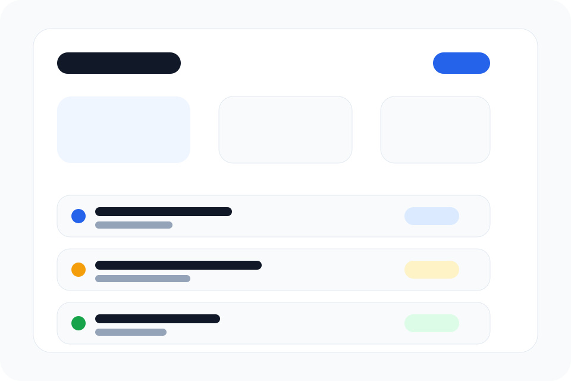

Featured
Task dashboard with localStorage
Добавление и удаление задач, фильтр по статусу, счётчики прогресса, переключение темы и сохранение данных в браузере.
- Минимальный JS только для нужной интерактивности
- Адаптивный интерфейс для телефона и компьютера
- Чистый CSS без тяжёлых зависимостей